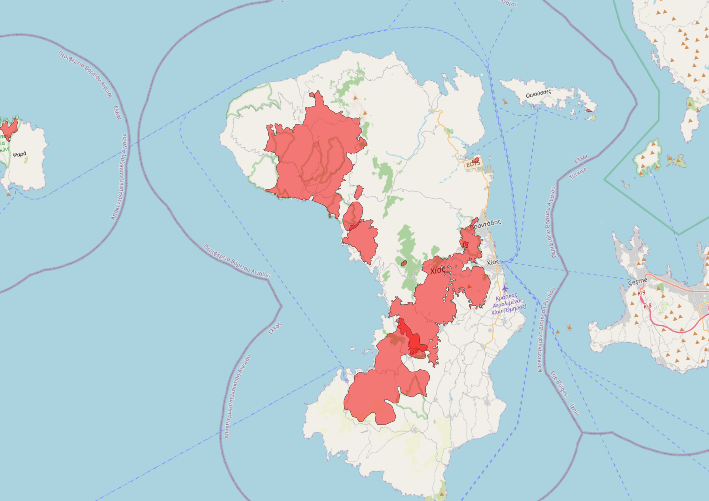
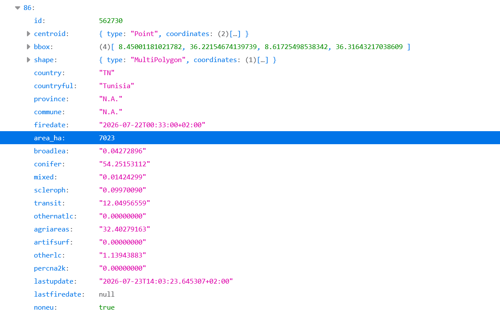

Wildfires seem to have grown more aggressive in recent years. So much so that a new word has emerged in the media to describe the worst of them: megafires. These wildfires can burn for days and consume more than 10,000 hectares, an area equivalent to around 14,000 football pitches.
The Age of Megafire is a cross-border, data-driven project that examines how Europe’s wildfires have changed over the past decade. Where are the largest fires happening? What kinds of landscapes are burning? And which protected areas are being affected again and again?
To answer these questions, we analysed wildfire data from the European Forest Fire Information System (EFFIS), managed by the European Commission as part of the Copernicus Emergency Management Service, covering the April–October fire seasons from 2015 through 2025.
Why we used EFFIS
For more than 20 years, EFFIS has used satellite imagery to identify and map burned areas. In simple terms, satellites repeatedly capture images of the Earth’s surface, allowing EFFIS to detect where vegetation has burned. Each burned area is represented as a polygon: a mapped perimeter that corresponds to real-world coordinates and shows its approximate extent on the ground.

Because EFFIS applies a common methodology across Europe, it is one of the most consistent sources for comparing wildfire data between countries over time. This is important because national authorities may record fires differently, using different definitions and reporting systems.
These differences are visible in EFFIS’ annual reports, which present both satellite-detected burned areas and figures submitted by national authorities. The two datasets produce different totals for the same country because they are based on different reporting methods.
EFFIS data is also relatively easy to work with. For this project, we downloaded the EFFIS Burnt Area dataset through its application programming interface, or API. An API is a way to retrieve a large amount of data automatically, rather than downloading individual records by hand from the website. It has a simple structure, without deeply nested fields, and each record generally corresponds to one mapped fire event.
Alongside basic information about each fire, such as the country, province, date and estimated area burned in hectares, EFFIS also provides the share of the burned area covered by different land types, including forests, agricultural land and different forms of natural vegetation.

The data is supported by good documentation. EFFIS explains that its burned-area maps are combined with the EU’s CORINE Land Cover database to estimate the types of land affected. The CORINE Land Cover Illustrated Nomenclature Guidelines helped us interpret these categories, while EFFIS’ annual reports provided further information on the dataset’s methodology, coverage and limitations.
EFFIS also provides information on the share of each burned area that overlaps the Natura 2000 network. Although it does not identify the individual sites affected or assess the severity of the damage, this provides a useful starting point for examining the exposure of protected areas to fire. We built on this information by matching the fire perimeters with the official Natura 2000 boundaries, identifying the sites affected and the frequency of their exposure.
What EFFIS does not show
Comparing EFFIS data with national fire statistics revealed an important limitation. EFFIS detects burned areas from satellite imagery, but it does not distinguish uncontrolled wildfires from other forms of open burning, such as prescribed fires, pastoral burning, agricultural burning or vegetation-management activities.
This can significantly affect the figures. In countries where these practices are common, including France and Romania, we found particularly large differences between EFFIS records and national statistics. We also identified substantial burned areas between November and March, when many controlled-burning activities take place, in provinces where such practices are widespread.
For this reason, we excluded all fires recorded from November to March and focused on the fire season, defined in this analysis as the period from April to October. This filter reduces the influence of prescribed and agricultural burning, although some controlled burns may remain in the dataset.
EFFIS also does not provide a complete breakdown of every European region affected by each fire. A single fire can spread across two or more administrative regions, while the province or municipality recorded in the database may not represent its full geographical extent.
Identifying all affected regions and linking them to Eurostat’s official NUTS classification was important for two reasons. First, it allowed us to compare regions across Europe at the same administrative level. Second, NUTS 2 regions are an important geographical scale for EU regional policies related to forests, climate adaptation and wildfire preparedness.
To address this gap, we overlaid the fire perimeters with Eurostat’s NUTS boundaries and identified every region crossed by each fire.
However, a limitation remains when examining what burned within those regions. EFFIS provides land-cover figures—such as forest, shrubland and agricultural land—for the fire as a whole. When a fire crosses several regions, those figures are not divided between them. We can therefore calculate how much of a fire fell within each region, but the original EFFIS data cannot show which region lost the most forest, farmland or other vegetation.
Finally, EFFIS does not capture every fire. Until 2018, it mainly mapped burned areas of around 30 hectares or more. Higher-resolution Sentinel-2 imagery later improved the detection of smaller fires, meaning that changes around that time partly reflect improved satellite detection rather than a real increase in the number of fires.
In its annual report for 2024, EFFIS estimated that the fires it captures account for around 95% of the EU’s total burned area, even though they represent only a fraction of all individual fire events. The dataset is therefore more reliable for measuring area burned than for counting fires.
Grouping the types of land burned
EFFIS estimates what covered each burned area before the fire using the CORINE Land Cover classification. For every fire, the dataset reports the percentage covered by several land types, including broad-leaved, coniferous and mixed forests, Mediterranean shrubland, transitional vegetation, agricultural areas and artificial surfaces.
To understand the categories, we reviewed their definitions in the CORINE Land Cover Illustrated Nomenclature Guidelines and grouped them into broader categories for analysis. Before doing so, we converted the percentages reported by EFFIS into hectares using the total area of each fire.
We defined forest narrowly by combining broad-leaved, coniferous and mixed forest. We also created a broader natural vegetation category, which included those three forest types alongside sclerophyllous vegetation, transitional woodland and shrub, and other natural land cover. Forest is therefore a subset of the broader natural vegetation category, and the two figures should not be added together.
Agricultural areas and artificial surfaces were kept as separate categories. Agricultural areas may include cropland, vineyards, olive groves, orchards, pastures and mixed agricultural landscapes, while artificial surfaces include settlements, roads, industrial areas and other human-made land cover.
Matching fires to their NUTS regions
As described above, EFFIS represents each burned area as a polygon: a digital shape made up of real-world coordinates that traces the approximate perimeter of the fire. Eurostat similarly provides each NUTS region as a polygon. By placing these two shapes on top of each other, we could identify every region the fire crossed and calculate how many hectares burned within each one.
We downloaded Eurostat’s official 2024 NUTS boundaries from its GISCO geographical database, using the regional polygon dataset at the 1:1 million scale. Eurostat provides these files in several coordinate reference systems (CRSs), the mathematical frameworks used to position geographic data on a map. We used EPSG:3035, a European projection measured in metres, and transformed the EFFIS fire polygons into the same system. This step is essential: if two datasets use different coordinate systems, their boundaries may not align correctly and area calculations may be wrong.
We used the 2024 NUTS boundaries consistently across the entire 2015–2025 period, allowing fires from different years to be compared using the same regional geography.
The analysis was done in Python using the GeoPandas library rather than desktop mapping software such as QGIS. Like QGIS, GeoPandas allowed us to intersect thousands of fire and regional polygons, divide fires that crossed regional boundaries and calculate the area of each resulting section. Its main advantage is that the entire workflow can be automated and easily repeated.
All the steps—from collecting and cleaning the API data to matching the fires to their regions and calculating burned areas—were conducted in the same environment, using Jupyter notebooks. This makes it easier to rerun the analysis when the data needs to be updated and to share the code so that others can replicate the methodology.
We first calculated the overlap at NUTS 3 level, the smallest regional scale used in our analysis, and then connected each area to its corresponding NUTS 2 and NUTS 1 region. We also added Eurostat classifications showing whether a NUTS 3 region is urban, rural or intermediate, to examine which types of regions were most affected.
The process required some adjustments. When geographic polygons from separate sources are intersected—even when using the same coordinate reference system—small differences can arise. We therefore adjusted the regional sections proportionally so that their combined area matched the total burned area reported by EFFIS. For example, if 60% of a fire polygon fell in one region and 40% in another, the reported burned area was divided between them using the same proportions.
Where a fire crossed an international border, we kept only the part within the country assigned to that fire in the EFFIS database.
After assigning each fire to all the NUTS 3 regions it crossed, the same fire could appear in several rows. We therefore counted fires using their unique IDs, not the number of rows.
The final database covers wildfires across 26 EU countries with available data and includes 563 NUTS 3 regions, linked to 186 NUTS 2 regions and 82 NUTS 1 regions.
Classifying fires by size
To examine how the scale of Europe’s wildfires changed during the April–October fire seasons from 2015 through 2025, we grouped fires into seven categories based on their total burned area: very small fires below 5 hectares; small fires from 5 to under 30 hectares; medium fires from 30 to under 100 hectares; large fires from 100 to under 1,000 hectares; very large fires from 1,000 to under 5,000 hectares; extreme fires from 5,000 to under 10,000 hectares; and megafires of 10,000 hectares or more.
The threshold of 10,000 hectares for megafires follows classifications used in recent scientific research on Mediterranean wildfires, although the term does not have a universally agreed scientific definition. We adapted the remaining categories to examine smaller and intermediate-sized fires in greater detail. The two smallest categories should be interpreted cautiously because fires below 30 hectares were not detected consistently throughout the study period.
Analysing Natura 2000 sites
To identify protected areas affected by fire, we overlaid the fire-season perimeters with the official Natura 2000 boundaries available at the end of 2024. Both datasets were transformed into the same European coordinate system, EPSG:3035, so their boundaries aligned and the overlaps could be measured accurately.

Using GeoPandas, we calculated where each fire perimeter intersected a Natura 2000 site and the size of that overlap in hectares. We focused on fires larger than 1,000 hectares, counted the sites affected at least once and identified those crossed by more than one such fire during the study period.
We also calculated the cumulative area affected within each site. This does not necessarily represent unique land: the same area was counted again if it burned in different years, reflecting repeated exposure. Natura 2000 designations can also overlap, meaning the same burned area may appear under more than one site code. The results should therefore be interpreted at site level, not added together as a de-duplicated total for the entire network.
Our full methodology and the code used to collect and analyse the data are available on GitHub.
The Age of Megafire is a cross-border, data-driven project organised and coordinated by the Mediterranean Institute for Investigative Reporting (MIIR), in collaboration with the European Data Journalism Network (EDJNet).
Research and reporting for the main article: Janine Louloudi and Kostas Zafeiropoulos / MIIR
Data collection and analysis: Konstantina Maltepioti / MIIR
Scrollytelling production: Szabó Krisztián / Átlátszó